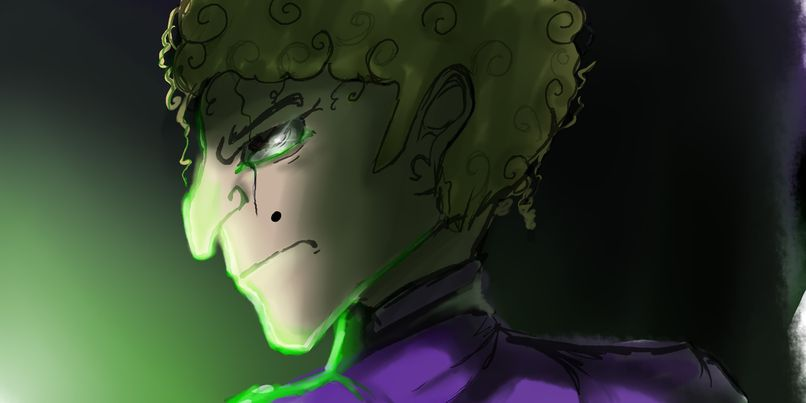

Geocraft é um projeto de um jogo que esta sendo desenvolvido na game engine Game Maker
Geocraft" é um jogo de aventura e exploração ambientado em um mundo único chamado Geo-Earth. No jogo, os jogadores assumem o papel de um personagem em busca de descobertas e aventuras em um mundo cheio de mistérios e desafios.
A história se desenrola em torno da jornada do protagonista, que se aventura por diversos locais em Geo-Earth, incluindo a cidade de Cubic-Land e a região selvagem de Indigenous-Land. Ao longo do caminho, o jogador encontra diferentes personagens, resolve quebra-cabeças, enfrenta desafios e descobre segredos ocultos sobre o mundo e seus habitantes.
O enredo do jogo é centrado na busca do protagonista por respostas sobre o passado de Geo-Earth, incluindo a origem da cubicidade do mundo e o propósito por trás de sua existência. Conforme avança na história, o jogador desvenda mistérios e enfrenta obstáculos que o levam a uma jornada emocionante e repleta de surpresas.
Com mecânicas de jogo inovadoras e uma narrativa envolvente, Geocraft oferece uma experiência única aos jogadores, convidando-os a explorar, descobrir e desvendar os segredos de um mundo fascinante e cheio de possibilidades.
